-
2009
最佳城市SUV内饰
-
2009
NO.1 SUV年度车型
-
2009
RJC2007-2008年
最佳年度车型
-
2009/11/24
耀目新视界 Mazda
CX-7 锋芒上市
-
2013/1/10
CX-7 荣获年度最受
欢迎进口车型SUV
-
2014/7/30
“运动型高性能SUV”
国产Mazda CX-7上市会
通过直喷系统和涡轮充电器的组合，实现最大扭矩340-350Nm/2000rpm-4500rpm，最大功率175kw/5000rpm，百公里加速仅需10.6s，爆发无可匹敌的澎湃动力。
采用光滑的皮革纹饰处理，立体文字板和白色指针，当您启动发动机的瞬间，动感立体的光芒即可映衬出内室的运动气氛。
包裹感极强的真皮材质座椅，搭配前座椅加热装置，为您奉上兼具运动感与舒适性的惬意驾乘感受。

将跑车的流畅快意与SUV的强力动能融汇于一道流线。
将线圈弹簧和减震器分配的配置方案，使减震器随速度的递增平稳发挥减衰力，实现柔和平稳的驾乘愉悦。
智能适时四驱系统（AWD）能通过后差速器的油温，ABS/DCS运行状况，车轮转速，发动机运行状况确定路况和驾驶状态，由此最佳地控制前后轮扭矩从100:0到50:50的平衡分配，将动力和扭力可靠地传递到路面，实现驾驶乐趣与冰雪湿滑等挑战性路面上的操控稳定性之间的良好平衡，由此大大提高通过性能。
-
动感劲酷的前脸
-
2.3T性能至上的巅峰选择
-
跑车风格仪表盘
-
动感舒适兼具的真皮座椅
-
流线型动感车身
-
多连杆式独立后悬
-
智能适时四驱系统
帖子作者：因为想你会寂寞
说起来也算有缘，到目前为止开过的都是一汽马自达的车子~~第一辆马六，开了六年。第二辆CX-7，开了不到两个月，行驶里程5500公里，感觉是相当可以滴~~， CX-7的前脸仍然保持了马自达一贯的运动风格，我很喜欢，这也是我入手马六，CX-7的主要原因之一，这是个看脸的世界。简直是太迷人了，第一眼就相中它。CX-7的做工有目共睹，值得一提的是国产后CX-7的车漆质感依然很好，车的品质单看漆面就能感觉到它的高档之处。CX-7将镀铬进行到底了，视觉感受提升不少。车窗采用流线型设计，运动味十足。后座放倒空间还不错，尾门打开角度也很合适。中控部分跟睿翼很相似，突出运动风格。炮筒式的仪表板用在CX-7身上很合适，重点突出了速度表，垂直的指针设计一般用在跑车上。后排很宽大，坐仨人，没有感觉到拥挤。 现在开了也有一段时间了，首先从操控上来说，表现相当不错，方向盘很灵活，刹车系统也控制稳定，很轻松，转向什么的很精准。当然它的安全系数在suv中算的上佼佼者了，还有一点是我很喜欢的地方，就是路上没那么多的街车，个性的我个性的CX-7。
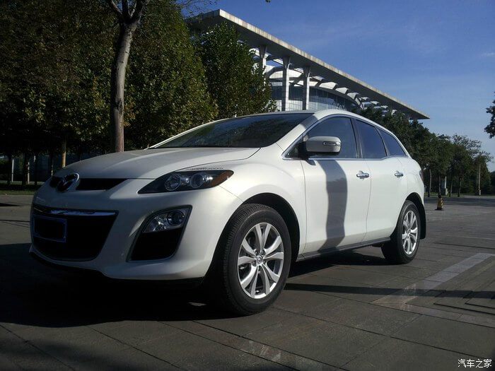 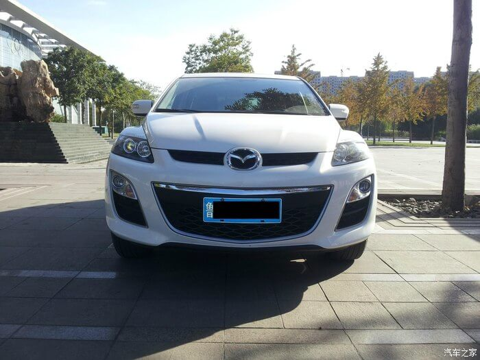 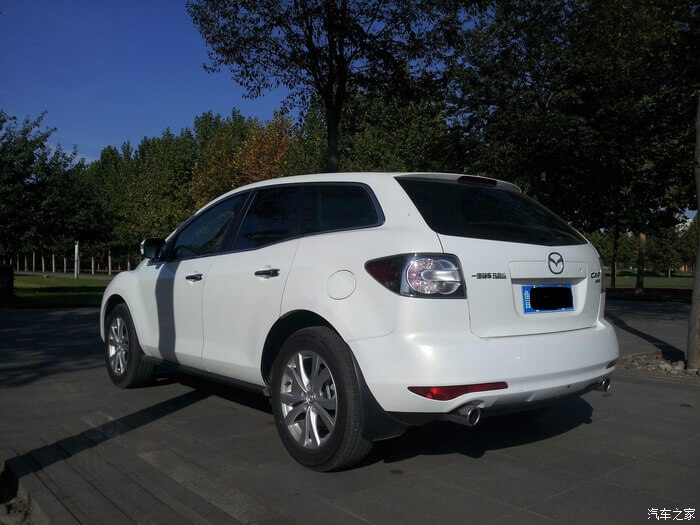 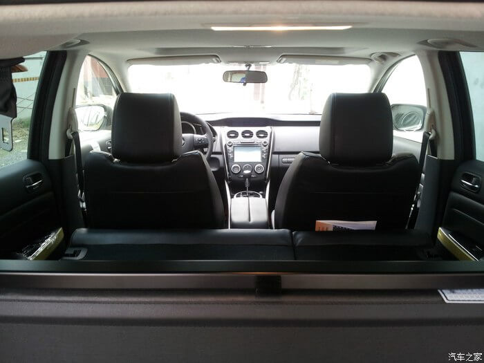 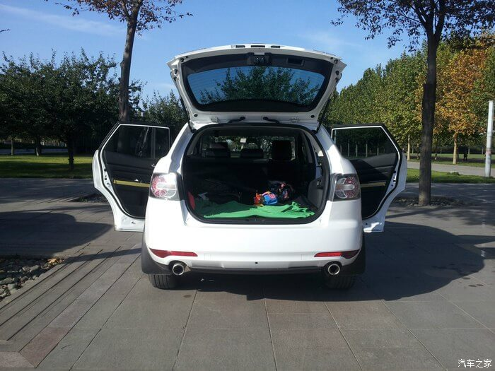 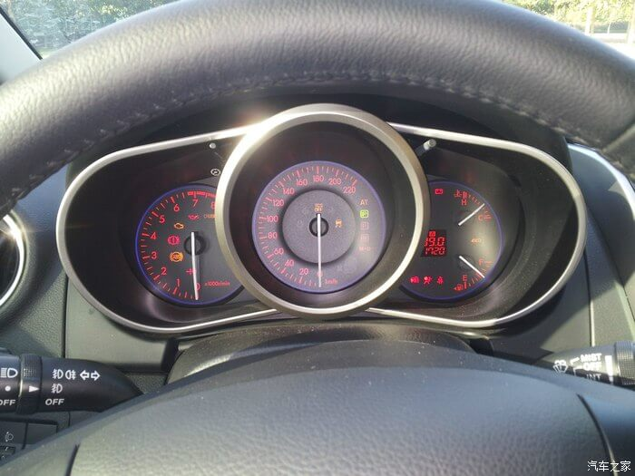 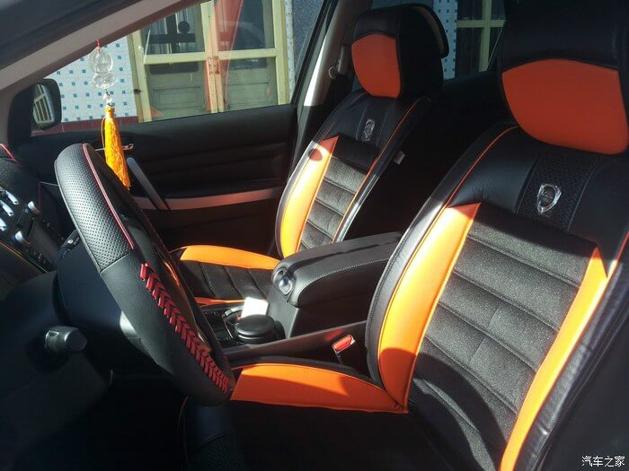 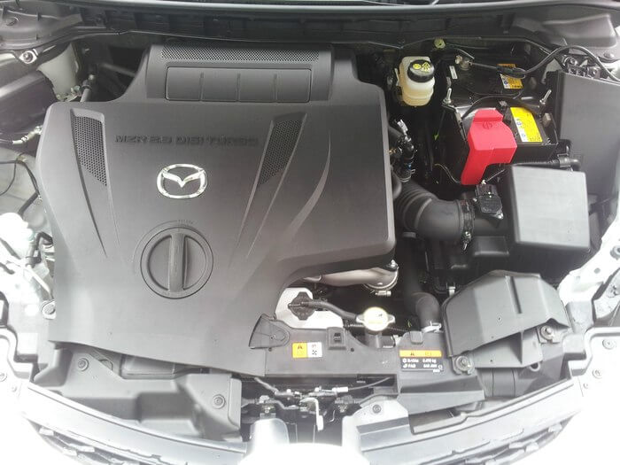作者: 商尹
说起天津，应该算是北漂的第一次出逃，这个不大的落脚点，让我第一次感觉到一座海滨城市的魅力，完全让我从喧嚣中逃脱，于我来说很值得纪念。
五一小长假，鉴于免费高速的前车之鉴，不敢跑太远，况且媳妇儿也没去过天津，放假前一天临时决定，说走就走，打包。开上我家小七前进......于是，天津我来了。其实我写游记，也是为了能留个回忆。我没有华丽的文采，没有缜密的逻辑，没有细致的安排。文字随心所欲，先谢谢各位看官听我吧啦完了上面的一段哈。
到天津后，小七和近现代风格的建筑在一起也是超级绝配！津湾广场附近的一处建筑群，非常漂亮，欧式风格，可惜不让进车，围着这里绕了2圈才找到一个合适的位置，小七摆在这里正好。
这边是住宅区，估计层高能有4-5米
最后上两张我们回到曾经的大学校园取景的婚纱照啦！用个最近很火的电影名很恰当，致我们即将逝去的青春！
在曾经的象牙塔里我们都绕不开梦想这个东西，其实梦想在我看来很虚，也许当我看着媳妇与车记录下甜美时光的时候梦想就是这种感觉吧！梦想和青春。
也希望兄弟姐妹们生活幸福美满！
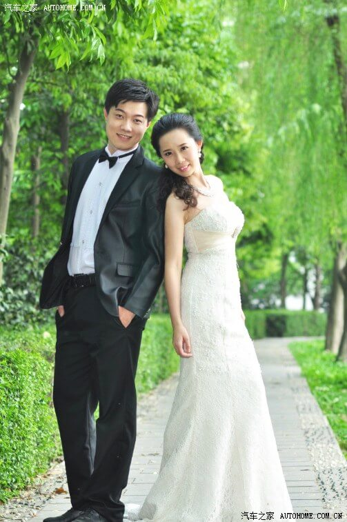 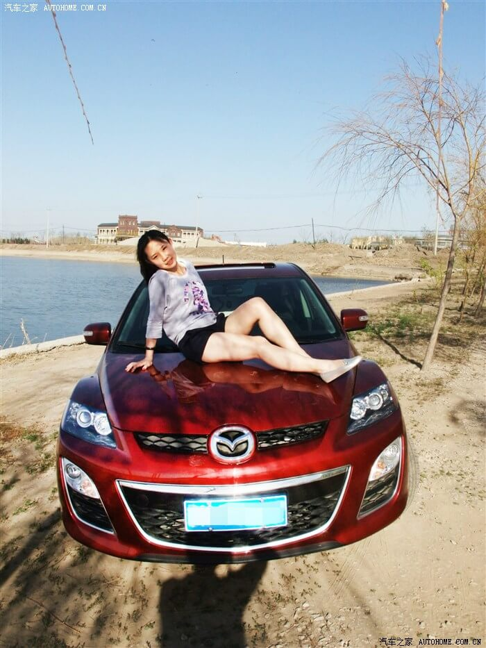 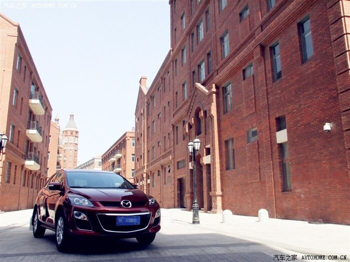 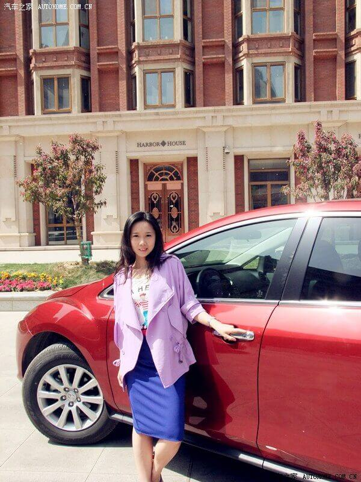 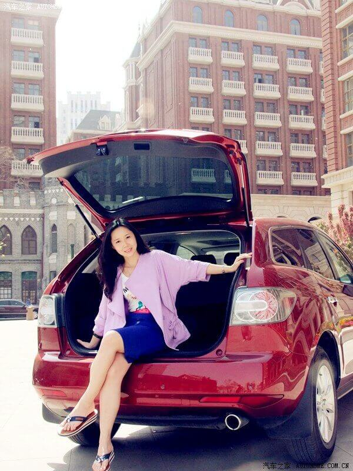作者: 蔡斌燎
我想有台车，当我高兴的时候，他能陪我左右，我想有台车，当我悲伤的时候，他能静静的让我靠着，不需要太多的理由，不需要太多的要求，看车买车提车，一切都很顺利，因为我知道我想要什么，因为我知道我能要什么，因为我知道我能拥有什么，有点散文的感觉。。。这样不太好！怎么说呢，喜欢CX-7，喜欢SUV,大气的感觉！高大的感觉！武汉烂路，唯有suv能不刮底盘，唯有suv能不惧大坑，唯有suv能不惧立交！提车已经有2个多月了，一直没交作业。俗人俗事多，好不容易抽个时间，这次借着“我和一汽马自达有个约会”的机会把作文补上，做为本次活动的征文吧~~开始上图 黑色显得商务，不过我喜欢！车长4705mm,轴距2750mm，中级suv啊！单看空间数据惊人！
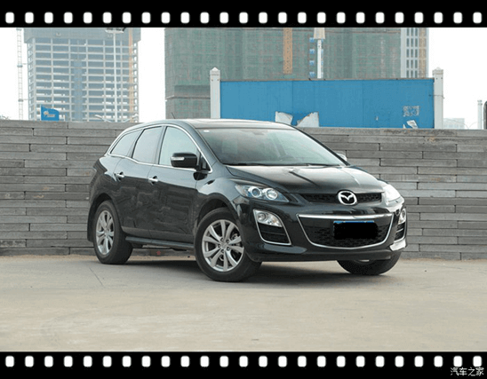高配带有大灯高度可调和清洗功能，厚道的配置。
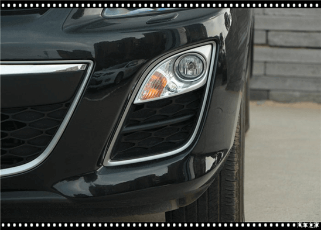中控很简洁，不是吗？按键多整齐啊！我一个一个地按过去，再按过来！
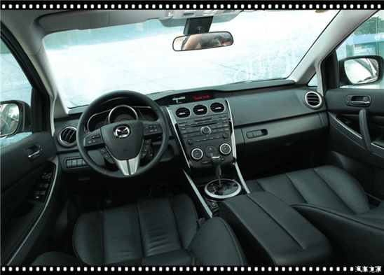 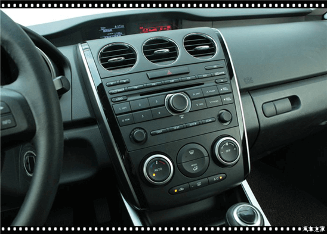个人感觉cx-7还是挺适合我这种上点年纪，有点地位的商务人士，很踏实的感觉，当然不适合小年轻啦！沉稳，舒适，安心，这样的人，这样的车，才能给家庭，给亲人带来安全感，我要的也就是这份感觉！
作者: 因为想你会寂寞
说起来也算有缘，到目前为止开过的都是一汽马自达的车子~~第一辆马六，开了六年。第二辆CX-7，开了不到两个月，行驶里程5500公里，感觉是相当可以滴~~，这次借着“我和一汽马自达有个约会”的活动和大家交流一下本人的用车感受。话说像我这种有俩辆车的双重车主会不会增加中车模的几率啊~~呵呵。
接触CX-7之前，恰巧开朋友的CRV溜了圈，于是很喜欢SUV，开着都觉得敞亮。但是一直对本田形象没什么好感，说了喜欢SUV，紧接着就碰上心仪对象，这事儿真叫一个巧。去保养小六的时候去展厅溜达，看到这辆憨憨的车子，简直是太迷人了，第一眼就相中它。然后进一步去深入试驾，（当时只有2.5L的）开着它走走停停感觉还不错，方向盘比马六要轻快许多，对于我来说够了。安全上个人觉得SUV属高大类，本身就比轿车要安全，看CX-7的宣传手册上写的安全系数在SUV车型中都算是佼佼者，对于这点就不用太担心了。当时就决定是它不变了。只可惜当时刚买了小六没几年，囊中羞涩，只能忍了。直到国产cx-7上市，果断入手。
记得那会儿对cx-7是一见钟情，觉得cx-7很漂亮，这才进一步了解继而拥有了它。 现在开了也有一段时间了，在这说一下我的感受。首先从操控上来说，表现相当不错，方向盘很灵活，刹车系统也控制稳定，反正给我的感觉是完全像小轿车一样，很轻松，转向什么的很精准。当然它的安全系数在suv中算的上佼佼者了，安全装备很齐全，开着它既放心又舒适。还有一点我喜欢的地方，就是路上没那么多的街车。这些是我首开cx-7后的一点小感。
我的CX-7是2.3T的，原地起步地板油推背并不强烈，从我的驾驶习惯来看感觉还好，但是当车速达到60公里以上，你完全不会料到那反应会如此激烈！！那种感觉就像失控一样弹了出去。其实2.5的排量在城市使用非常够用，就算有了2.3T，大部分时间还是会温柔的开车。所以买2.5还是2.3T也不用太纠结啦。 暂时说到这，其它体会继续更新。
CX-7的前脸仍然保持了马自达一贯的运动风格，我很喜欢，这也是我入手马六，CX-7的主要原因之一，这个看脸的世界~~
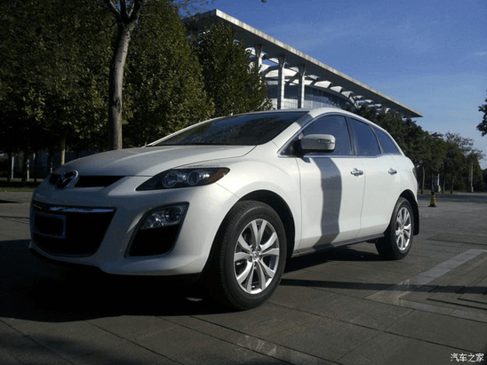CX-7将镀铬进行到底了，视觉感受提升不少。车窗采用流线型设计，运动味十足。
CX-7的车内空间在SUV里不算很大的那种，但也够用。中控部分跟睿翼很相似，突出运动风格。铺这个台垫是因为太难打理，脏了直接取下来清理一下就行了。
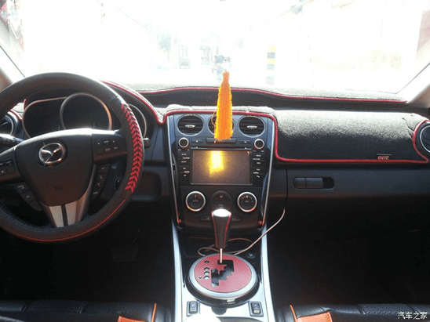4000公里左右时，检查发动机舱发现发动机上盖连接处有油渣，用棉球清理干净后至今没在出现渗油现象，也可能是多心了。后来打电话给4S，回复说可能是装配时弄上的油，如果再有渗油现象，过去给免费维修。现在5500了还没有渗油现象，一汽马自达千万别辜负广大车主对你的期望哟~
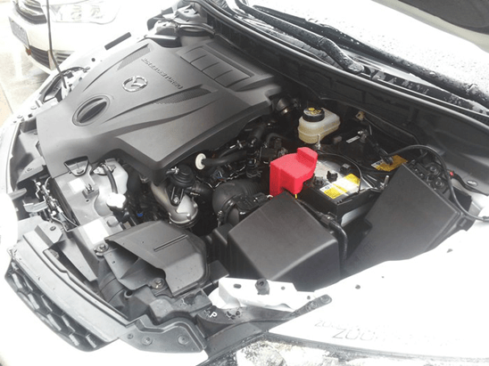总体来说车子不错。开车舒心，用着顺心。群里好多CX-7的车友平时一起交流，很是开心。虽然希望小7的队伍壮大，但是也希望不要成为街车，呵呵。这次一汽马自达也破百万了，得好好感谢一下我们这些车主，更多的福利不能停啊！先写到这，谢谢大家!
作者: GTO麻辣教师
外形方面 CX7车头的设计应该是MAZDA引以为毫的，它继承了MAZDA一贯的运动血统，而且又不失大气，流畅的流线从车头贯至车尾，让CX7 看起来更像SUV中的跑车……厚重的车头显得更加稳重，18的轮毂给人美国DUB风格的感觉，后视镜上的LED转向灯既增加了美观有增强了车的安 全性。刹车灯同样采用LED材料，不用说了-----漂亮安全！设计师没有把备胎放在车屁股上，增强了CX7的运动感，总之，这款车看上去更像是一部跑车。
内饰方面 车体内饰也设计的充满了现代感，整体的DASH BOURD给人的感觉就是大气！运动风格的方向盘采用的三幅的样子，12个SPEAKER采用BOSE音响系统。我个人认为唯一每中不足的BOSE音响做的高音不是那么完美，但是又舍不得在车里打洞去装小高音……环绕音的 效果就啥也不多说了！里程表采用MAZDA一贯的风格，红蓝的灯光晚上看上去格外的抢眼……内部空间宽敞舒适，坐在后排给人的感觉更像是坐 在一辆轿车里面。
动力方面 因为是新的车，自己不敢去狠心的踩油，每次都慢慢的跑，但是在TURBO的帮助下，过了2500RPM，加起速来很是给 劲，100KM/H以上加速轻松自如，6档自动变速箱应该是这车最大的骄傲，100KM/H还不到2000RPM。我自己感觉这车最大的优点是路噪声极 低，跑高速感觉很轻快，让人一点都不感觉累，安静给人的感觉就是安全！
其他方面 开到现在，还是很满意我的CX7，油耗可能对一些 开惯了小车的朋友来说大了一些，如果市区内开车开空调的话，要大过17L/100KM……大的轮毂同时也增大了转弯半径，在停车位紧张的 时候给停车带来了一些不便。对个人来讲还算OK，停车的时候不心急就好了嘛，一次不行两次啊。
作者: 豆豆爸
原来的车是荣威550，三年多，三万三千多公里，陪着我们一家人，也没有掉过链子，谢谢你的陪伴。
换车，从选车到订车，也就两个星期时间，周围很多人问我同价位的车配置比CX-7丰富的多了去了，为什么就选了CX-7这个冷门车？其实第一台荣威550也不是热门车，我和LP都不喜欢大街上满眼的街车，没有个性。整个看车选车的过程中，我也看过、试过很多车，从最开始的DS6，那外观、配置确实不错，全家人都一致通过，一度以为就是他了，但是深入了解后，无奈车主反馈的小毛病较多，且本地没有4S，最终放弃；第二批车看了CX-7、现代新胜达、RAV4、纳智捷大7，配置一个比一个丰富，一个比一个炫，可最终还是选择了CX-7，归结原因还是安全可靠，关键的安全配置一个不少，要说其他车的什么触屏中控（大7）、车身和方向盘调节（新胜达）什么的重要吗，类似于嘘头的配置出了问题还真闹心，而且通过试驾，没有一个车有CX-7好开，选择CX-7，就是选择安全可靠。上提车照片，内有车模哦。求认证哦。
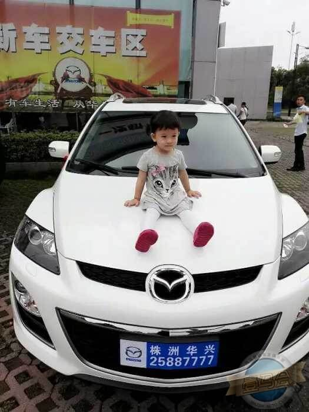-
CX-7 5500公里驾驶小结
-
漂亮媳妇的美好宣言！
-
【我和一汽马自达有个约会】我要的就是你—CX7提车两月有感！
-
【我和一汽马自达有个约会】CX-7 5500公里驾驶小结
-
CX-7心得体会
-
告别小五，欢迎杠七